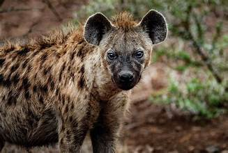
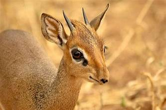
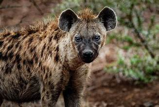
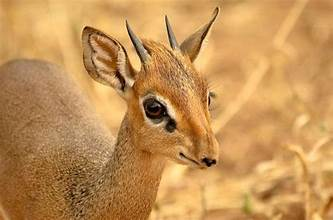
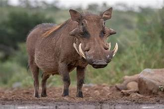
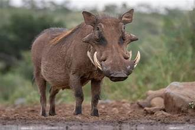

About us
Welcome to Romeo Wildlife Sanctuary, a haven dedicated to the conservation and protection of wildlife and their natural habitats. Nestled in the heart of [Location], our sanctuary spans [Number] acres of diverse ecosystems, providing a safe refuge for endangered and native species. At Romeo Wildlife Sanctuary, we are committed to preserving biodiversity through sustainable practices, research, and education. Our team of passionate conservationists works tirelessly to rehabilitate injured animals, support breeding programs, and promote awareness about the importance of wildlife conservation. Visitors can explore scenic trails, observe wildlife in their natural surroundings, and participate in guided eco-tours and educational programs. Whether you're a nature enthusiast, photographer, or advocate for environmental protection, [Sanctuary Name] invites you to join us in our mission to protect and celebrate the beauty of nature. Come visit and be part of our journey in safeguarding the wild for future generations!
Below are some of our animals
 





 
